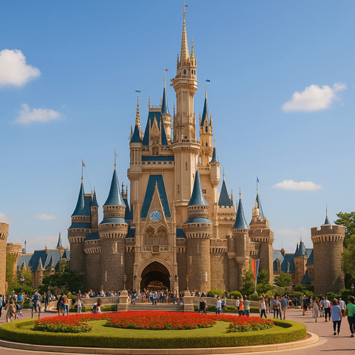

Tokyo Disneyland – El Mágico Parque Temático de Japón con Emocionantes Atracciones y Desfiles Encantadores
Tokyo Disneyland es el parque temático más famoso de Japón y uno de los destinos de ocio más visitados del mundo. Situado a las afueras de Tokio, en la prefectura de Chiba, este parque de ensueño da vida a los personajes e historias más queridos de Disney a través de emocionantes atracciones, desfiles espectaculares y escenarios encantadores que cautivan tanto a niños como a adultos.
Un mundo de fantasía en el corazón de Japón
Inaugurado en 1983, Tokyo Disneyland recibe millones de visitantes cada año y ofrece una combinación única de la magia clásica de Disney con la hospitalidad japonesa y una atención excepcional a los detalles. El parque está dividido en siete áreas temáticas, entre ellas:
- World Bazaar: Una nostálgica calle comercial inspirada en la América de principios del siglo XX.
- Adventureland: Explore selvas, ríos y la aventura de Piratas del Caribe.
- Westernland: Viva el Lejano Oeste con Big Thunder Mountain y un auténtico ambiente fronterizo.
- Fantasyland: El reino de Cenicienta, Peter Pan y otros cuentos clásicos.
- Tomorrowland: Una zona futurista con atracciones inspiradas en el espacio y la innovación.
- Critter Country & Toontown: Ideales para niños y familias, llenas de diversión y juegos.
¿Por qué visitar Tokyo Disneyland?
Ya sea que sea un fan de Disney de toda la vida o que simplemente busque una experiencia familiar inolvidable, Tokyo Disneyland ofrece entretenimiento de clase mundial y un servicio impecable. No se trata solo de las atracciones: los desfiles diarios, los eventos de temporada y los productos exclusivos hacen que cada visita sea memorable. Tokyo Disneyland se clasifica constantemente entre los mejores parques temáticos del mundo, combinando creatividad occidental con precisión japonesa.
Principales atracciones:
- El icónico Castillo de Cenicienta en el centro del parque
- Celebraciones de temporada como Halloween y Navidad
- El desfile diurno “Dreaming Up!” y el desfile eléctrico nocturno
- Snacks exclusivos de Disney en Japón y productos originales
- Limpieza impecable y personal extraordinariamente amable
Organice su visita
Ubicado en Urayasu, Chiba, a solo 30 minutos en tren desde la Estación de Tokio, Tokyo Disneyland es fácilmente accesible y está abierto todo el año. Se recomienda reservar las entradas con antelación, especialmente durante temporadas altas y días festivos. Para disfrutar plenamente de la experiencia Disney, considere alojarse en uno de los hoteles oficiales del Tokyo Disney Resort.
Tokyo Disneyland no es solo un destino — es un viaje mágico a través de sus historias favoritas, reinterpretadas con el estilo único de Japón. ¡No pierda la oportunidad de vivir esta magia!
Etiquetas: Tokyo Disneyland, parques temáticos en Japón, atracciones familiares Tokio, desfiles Disney, vacaciones en Tokio, atracciones Disney, experiencias mágicas Japón, entretenimiento Tokio, guía de viaje Tokio
¿Está preparando su visita a Tokyo Disneyland?
Para una experiencia verdaderamente inmersiva y enriquecedora, le recomendamos reservar un guía privado certificado de nuestro equipo. Todos nuestros guías son profesionales oficialmente autorizados por el gobierno japonés y ofrecen visitas personalizadas según sus intereses. Contacte con su guía seleccionado con antelación para confirmar la disponibilidad y recibir asistencia experta para su viaje.